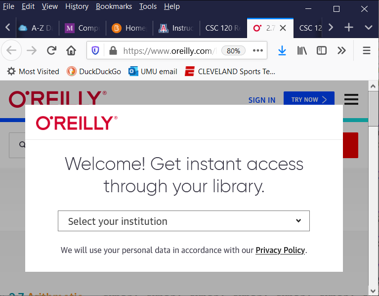
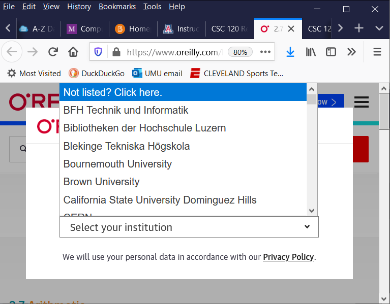
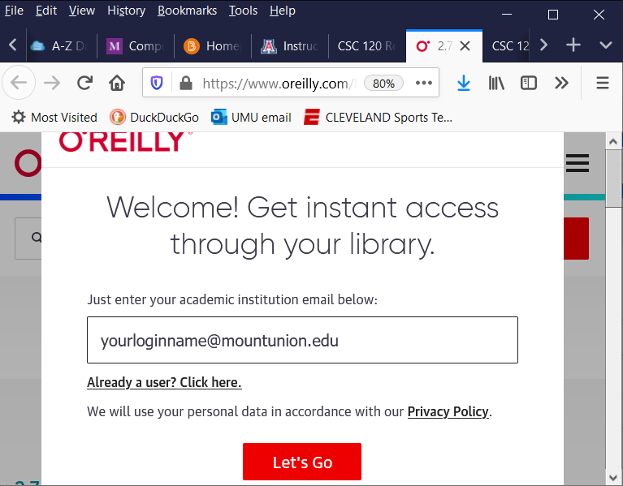
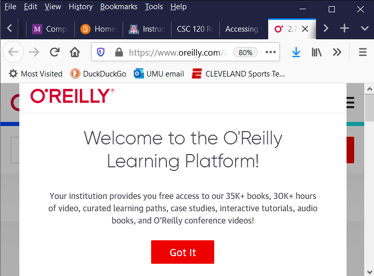
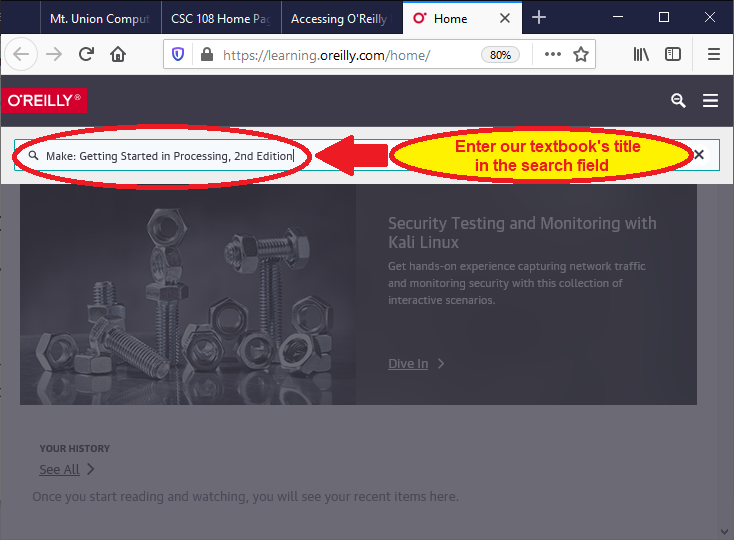
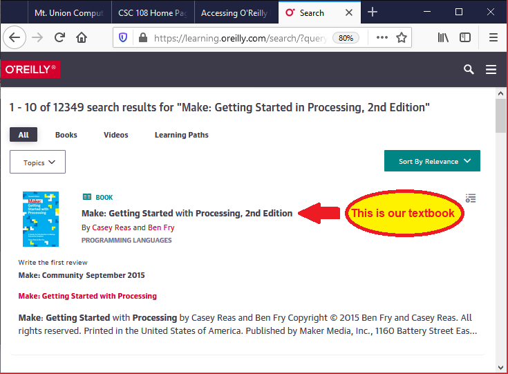
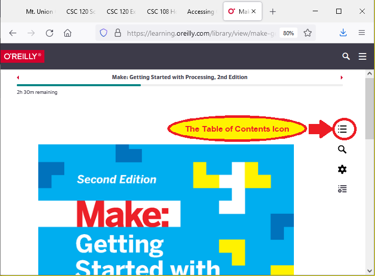
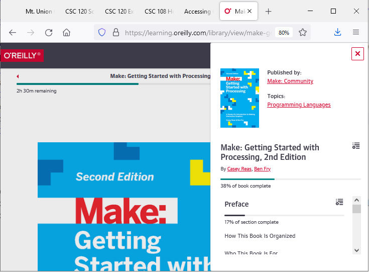

CSC 108 Introduction to Computer Programming
Accessing on-line Textbook References
What is O'Reilly Learning?
The University of Mount Union has a subscription to O'Reilly Learning, a resource that includes over 35,000 technical books that can be accessed
by Mount Union students for free. We will make use of this resource for reading assignments throughout the semester. The following
instructions will describe how to log into the O'Reilly interface after clicking a link in the "Readings" section of the course web site.
Access the on-line textbook via this link to O'Reilly Learning
- Click on this link to the O'Reilly Learning Home
Page
(you may need to log in using the directions below)
- From the Home Page, search for the title of our textbook:
Make: Getting Started in Processing,
2nd Edition
- Navigate to the correct chapter or section of the book using the Table of Contents icon in the upper-right
corner of the page.
How it works:
When you click on a link to a Textbook Reference from any of the web pages on the CSC 108 web site, if you are not logged into the O'Reilly system
already, you will see a screen that looks like this:

Click on the pull-down list to select an institution. Mount Union won't be in the list, so you have to choose the first option in the
list, entitled "Not listed? Click here.", as shown next:

In the dialog that appears, enter your full Mount Union e-mail address, including the "@mountunion.edu" part at the end. Then click the
red "Let's Go" button (note: pressing the [Enter] key doesn't work; you must click with the mouse):

Then you'll see this next screen which indicates that you have entered your e-mail address successfully.

Click the red "Got It" button, and
then you see the main O'Reilly Learning Home Page. To access our course textbook, enter the title of our textbook
in the search field, and press the [Enter] key on the keyboard:

From the search results page, click on our textbook (it has the light blue cover, as seen here):

When the book loads into the browser window, you can navigate from section to section using the
"Table of Contents" icon in the top-right corner of the browser window.

Here's what the browser window looks like after clicking the "Table of Contents" icon:

Use the scroll bar in the lower-right corner of the Table of Contents pane to find the chapter/section
you wish to read.
A note for the future:
This is one of the best features of a Mount Union education, from a Computer Science perspective. There are thousands of books covering a wide
variety of topics and subjects freely-available to you for learning about programming in various languages and all sorts of computing and technical
topics. Be sure to utilize this resource during your time at Mount Union!